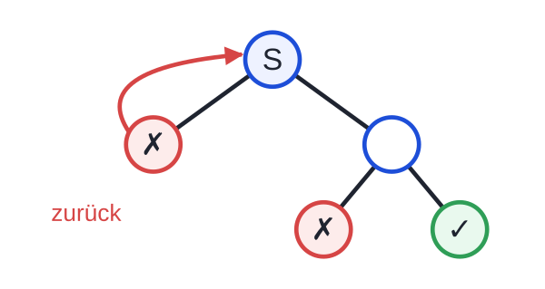

Überblick › LB 2/3 Datenstrukturen
3.10 Backtracking 2: Graphen und Belegungsprobleme
In 3.6b hast du im Wegenetz eine Tour gesucht: vorwärts gehen, bei einer Sackgasse zurück, den nächsten Weg probieren. Dort lag der Baum fertig im Speicher. Auf dieser Seite geht es weiter – erst in einem Graphen, in dem es Kreise gibt, dann bei Belegungsproblemen wie Klausurplan, Sudoku oder N-Damen. Dort ist gar kein Baum gespeichert: Der Baum der Möglichkeiten entsteht erst beim Suchen.
Schritt 1: Vom Baum zum Graphen – find_path
Im Baum führt zu jedem Knoten genau ein Weg. In einem Graphen gibt es Kreise: Von 0 kommt man zu 1 und von 1 wieder zu 0. Eine Suche, die einfach jeden Nachbarn probiert, liefe dort endlos im Kreis. find_path überspringt deshalb alle Knoten, die schon im Pfad sind – sonst ist es dieselbe Suche wie in 3.6b. Achte im Video außerdem darauf, warum path + [start] eine neue Liste erzeugt: In 3.6b wurde stattdessen mit append und pop zurückgenommen.
find_path in Thonny (ca. 2 min) – Die Videos haben keinen Ton, alles Wichtige steht im Untertitel.Jetzt du – mittippen: Lege 3_graphen/wegsuche.py an und tippe den Code aus dem Video ab: die Klasse Graph und die Methoden add_edge und find_path. Starte mit F5 und vergleiche die Ausgabe mit dem Video. Danach committen, z. B. 3.10 Schritt 1: Graph, add_edge, find_path angelegt.
Zum Nachlesen:
Kurz geprüft 1: Zweimal zurück AFB I
Ein Graph hat die Nachbarlisten 0: [1, 3] · 1: [0, 2] · 2: [1] · 3: [0]. Gesucht ist ein Weg von 0 nach 3; die Nachbarn werden in der Reihenfolge der Liste probiert und Knoten im Pfad übersprungen. Notiere die Pfade, die nacheinander entstehen. Wo wird zurückgegangen?
Lösung zeigen
[0] → [0, 1] → [0, 1, 2]. Von 2 aus ist nur 1 erreichbar, und die ist schon im Pfad: Sackgasse, zurück zu 1. Auch 1 hat keine weitere Möglichkeit: zurück zu 0. Dann [0, 3] – Ziel. Zurückgegangen wird also zweimal.
Kurz geprüft 2: Neue Liste oder dieselbe? AFB I
Was gibt print(a, path) aus? Überlege erst, dann probiere es in Thonny aus. Warum verwendet find_path path = path + [start] und nicht path.append(start)?
path = [0]
a = path + [1]
path.append(5)
print(a, path)Lösung zeigen
[0, 1] [0, 5] – + erzeugt eine neue Liste, append ändert die vorhandene. Mit append würden alle Aufrufe dieselbe Liste verändern: Nach einer Sackgasse stünde der Knoten noch im Pfad des Aufrufers.
Danach: Aufgabe 3.10.1 – alle Aufrufe von find_path(0, 4) notieren.
Schritt 2: Belegungsprobleme – der Baum entsteht beim Suchen
Viele Rätsel und Planungsaufgaben bestehen darin, freie Plätze so zu belegen, dass Regeln eingehalten werden. Beispiele sind Damen auf einem Schachbrett, Ziffern in einem Sudoku oder Farben auf einer Landkarte. Hier ist kein Baum gespeichert: Jede Entscheidung („Mathe schreibt am Montag“) ist ein Schritt nach unten in einem gedachten Baum aller Möglichkeiten. Backtracking löst solche Aufgaben immer nach demselben Muster – es ist das Muster aus __tour in 3.6b: prüfen, setzen, rekursiv weiter, zurücknehmen.

def loese(zustand):
platz = naechster_freier_platz(zustand)
if platz is None:
return True # alles belegt
for kandidat in kandidaten(platz):
if ist_zulaessig(zustand, platz, kandidat):
setze(zustand, platz, kandidat)
if loese(zustand):
return True
entferne(zustand, platz) # Rücknahme
return False # SackgasseIm Video wird das Muster an Beispiel 2 angewendet: Fünf Kurse bekommen Klausurtermine, Kurse mit gemeinsamen Schülerinnen und Schülern dürfen nicht am selben Tag schreiben. Achte darauf, wo die erste Sackgasse auftritt, welche Einträge zurückgenommen werden und warum die Ursache weiter vorn liegt.
Zum Nachlesen mit Programm und Ablauftabelle:
Kurz geprüft 3: Wenn es keine Lösung gibt AFB II
Drei Kurse X, Y und Z stehen paarweise in Konflikt, es gibt nur die Termine Mo und Di. plane wird mit der Reihenfolge X, Y, Z aufgerufen. Verfolge den Ablauf: Was gibt plane zurück, und wie oft wird es insgesamt aufgerufen?
Lösung zeigen
Aufruf 1: X Mo. Aufruf 2: Y Mo verboten, Y Di. Aufruf 3: Z – Mo und Di verboten, False. Y hat keinen weiteren Tag: Rücknahme, False. X wird zurückgenommen und bekommt Di. Aufruf 4: Y Mo. Aufruf 5: Z – Mo und Di verboten, False; Y Di ist verboten, also False; X hat keinen Tag mehr. Ergebnis: False nach 5 Aufrufen – drei paarweise verbundene Kurse brauchen drei Tage.
Danach: Aufgabe 3.10.2 – das N-Damen-Problem nach demselben Muster.
Praxisbezug: Rätsel, Stundenpläne und Chipdesign
Alltag: Sudoku-Apps prüfen mit Backtracking, ob ein Rätsel genau eine Lösung hat, und erzeugen daraus neue Rätsel. Auch die Planung eines Turniers, bei dem kein Team zweimal hintereinander spielen soll, ist ein Belegungsproblem.
Beruf: Stundenplan- und Dienstplansoftware für Schulen, Kliniken oder Verkehrsbetriebe verwendet Backtracking kombiniert mit geschickten Regeln („Constraint Programming“). In der Halbleiterindustrie – etwa in den Dresdner Chipfabriken – werden bei der Verdrahtung von Chips und der Belegung von Maschinen ähnliche Such- und Optimierungsverfahren eingesetzt.
Das Wichtigste
Backtracking: Systematische Suche nach Lösungen: Man trifft schrittweise Entscheidungen und springt zurück, sobald eine Entscheidung in eine Sackgasse führt. Dann probiert man die nächste Möglichkeit, bis eine Lösung gefunden oder ausgeschlossen ist.
Suche im Entscheidungsbaum: Backtracking ist eine Tiefensuche im Baum aller möglichen Entscheidungen.
Muster für Belegungsprobleme (rekursiv):
- Nächsten freien Platz wählen. Gibt es keinen mehr, ist eine Lösung gefunden.
- Alle Kandidaten für diesen Platz nacheinander probieren; nur Kandidaten setzen, die keine Regel verletzen.
- Den Rest rekursiv lösen. Klappt das, ist man fertig.
- Klappt es nicht, den Kandidaten zurücknehmen und den nächsten probieren.
- Passt kein Kandidat, einen Misserfolg an die aufrufende Ebene melden.
Grundaufgaben
Aufgabe 3.10.1: Wegsuche nachvollziehen AFB I–II
Datei: 3_graphen/wegsuche.py – weiterführen
Commits: nach Teil 3: 3.10.1 Teil 3: alle Wege von 0 nach 4, kürzester bestimmt
- Zeichne den Graphen und notiere alle Aufrufe von
find_path(0, 4)mit dem jeweiligen Pfad. Markiere die Stelle, an der zurückgegangen wird. - Gib an, welchen Weg
find_path(1, 3)liefert. - Ändere das Programm so, dass alle Wege von 0 nach 4 ausgegeben werden, und bestimme daraus den kürzesten.
Aufgabe 3.10.2: Das N-Damen-Problem AFB II–III
Datei: 3_graphen/n_damen.py – neu anlegen
Commits: nach Teil 3: 3.10.2 Teil 3: dame_moeglich und setze_damen · nach Teil 4: 3.10.2 Teil 4: Aufrufe für N = 3, 4, 6, 8 gezählt
Auf einem N×N-Schachbrett sollen N Damen so stehen, dass sich keine zwei bedrohen. Eine Dame bedroht alle Felder in ihrer Zeile, Spalte und in beiden Diagonalen.
- Löse das Problem für N = 4 auf Papier und zeichne den Suchbaum bis zur ersten Lösung.
- Speichere den Zustand als Liste
spalten, bei derspalten[z]die Spalte der Dame in Zeile z angibt. Begründe, warum diese Darstellung die Zeilenregel automatisch erfüllt. - Implementiere
dame_moeglich(spalten, zeile, spalte)undsetze_damen(spalten, zeile, n). - Teste für N = 3, 4, 6 und 8. Zähle jeweils die rekursiven Aufrufe.
- Vergleiche mit einem Programm, das alle 88 Belegungen mit einer Dame pro Zeile durchprobiert.
Das kann ich jetzt
Grau steht, was der Lehrplan verlangt, darunter, was das für dieses Thema konkret heißt. Hake einen Punkt ab, wenn er in deinem Hefter zusammengefasst ist und du ihn ohne Hilfe kannst. Wie du ihn zusammenfasst, entscheidest du selbst. Die Haken speichert nur dein Browser.
Lehrplan LB 2 Backtracking (Kennen algorithmischer Problemlösestrategien)